미러시티 전경14장

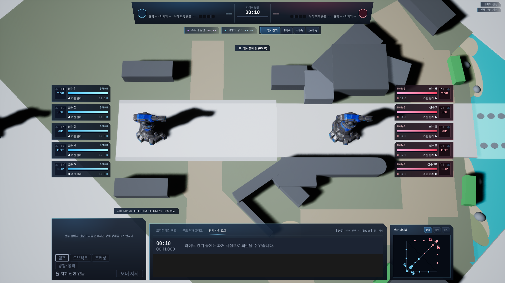
시험 경기 · 블루 미드 1차와 2차 포탑
전체 관전 시야의 시험 경기를 11초에 멈추고, 일반 관전 카메라가 아닌 촬영 전용 카메라로 두 포탑을 한 화면에 담았습니다. 두 포탑의 중심 거리는 이번 시험 배치에서 약 2,051유닛이며, 길옆의 벽과 수풀은 완성 지형이 아닌 임시 형상입니다.

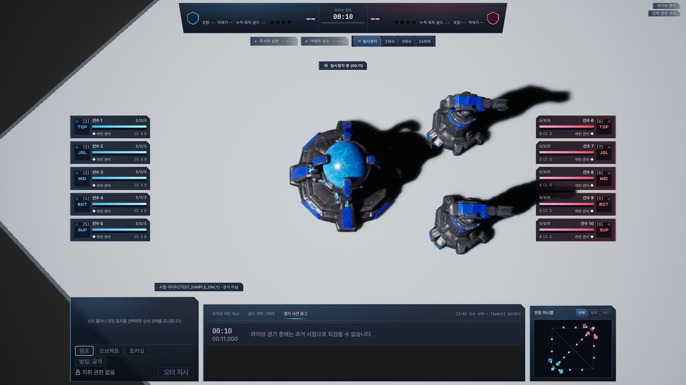
시험 경기 · 블루 코어와 쌍둥이 포탑
같은 시험 경기의 11초 시점에 촬영 전용 카메라만 본진으로 옮겼습니다. 코어 앞에 붙인 쌍둥이 포탑 두 기가 모두 보이며, 회색 바닥은 위치를 확인하기 위한 임시 평면으로 완성 지형이 아닙니다.

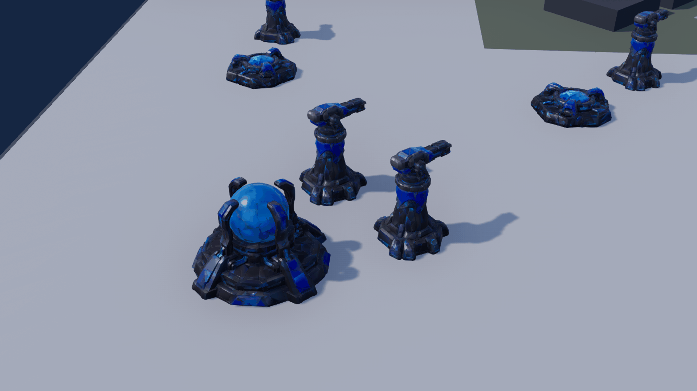
편집기 · 블루 본진 · 코어 쪽으로 옮긴 쌍둥이 포탑
편집기에서 두 포탑을 코어 쪽으로 옮겨 찍은 정적 시험 배치 촬영본이며, 실제 경기 화면은 아닙니다. 코어 중심에서 각 포탑 중심까지는 약 703유닛이고, 본진 바닥은 위치 비교용 임시 평면입니다.

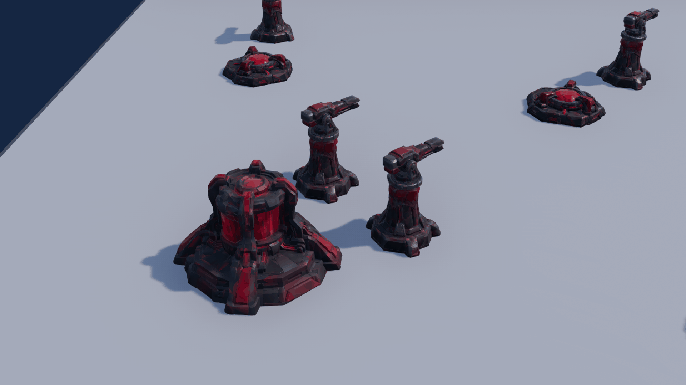
편집기 · 레드 본진 · 반대편에서 본 코어와 포탑
편집기에서 레드 본진에도 블루와 대칭으로 두 포탑을 배치한 정적 촬영본이며, 실제 경기 화면은 아닙니다. 이 시험 배치에서 코어와 포탑은 이전 배치의 표시 크기보다 각각 8%, 15% 크게 두었고, 회색 바닥은 미제작 임시 평면입니다.

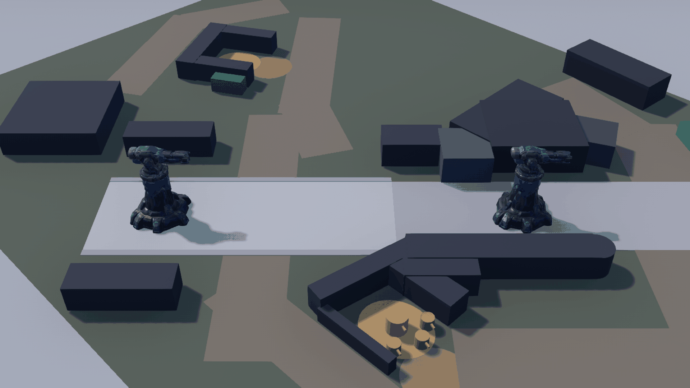
편집기 · 블루 미드 · 1차와 2차 포탑 사이
편집기에서 두 포탑 사이를 넓혀 찍은 정적 시험 배치 촬영본이며, 실제 경기 화면은 아닙니다. 중심 사이 거리는 약 2,051유닛이고, 길옆의 벽·수풀·캠프 자리는 통로를 확인하기 위한 임시 형상입니다.

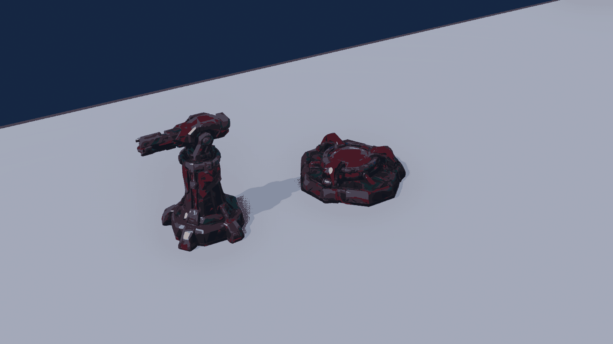
편집기 · 레드 탑 · 3차 포탑 옆 억제기
편집기의 정적 시험 배치 촬영본이며 실제 경기 화면은 아닙니다. 포탑과 억제기의 중심 간격은 700유닛 그대로이고, 낮은 억제기는 이전 배치의 표시 크기보다 20% 크게 표시했습니다. 두 구조물이 놓인 회색 바닥은 완성된 탑 라인 지형이 아닙니다.

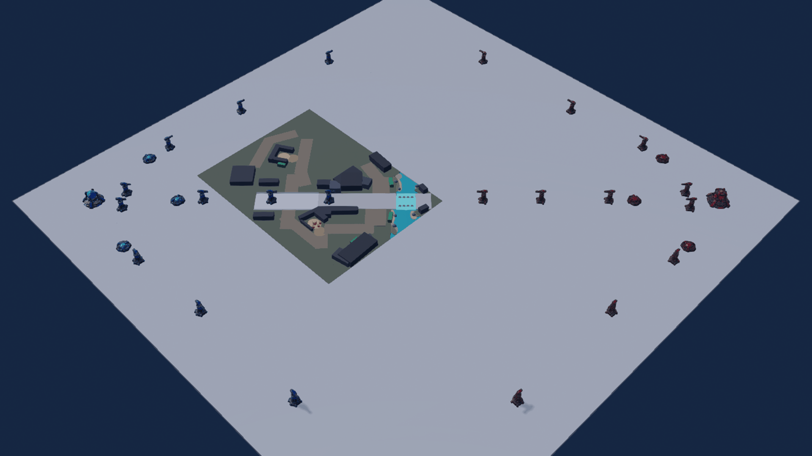
미러시티 전체 배치 · 블루 본진에서 레드 본진까지
게임 엔진에서 두 본진과 세 라인의 구조물을 한 화면에 담았습니다. 포탑 22기, 억제기 6기, 코어 2기는 실제 팀 모델입니다. 가운데 미드 구간 바깥의 회색 바닥은 위치를 확인하기 위한 임시 평면으로, 완성 지형이 아닙니다.

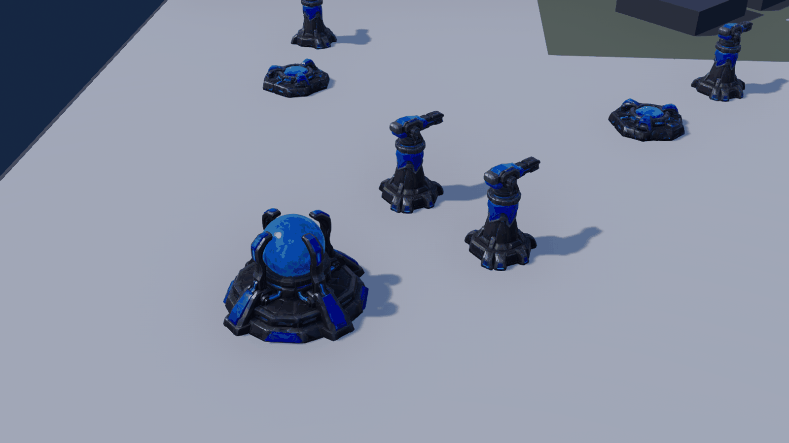
블루 본진 · 코어와 쌍둥이 포탑
전체 배치 사진의 왼쪽 본진을 가까이서 찍었습니다. 코어와 포탑 두 기의 형태와 간격을 보여주는 촬영본입니다. 주변 본진 건물과 지형은 아직 제작 전입니다.

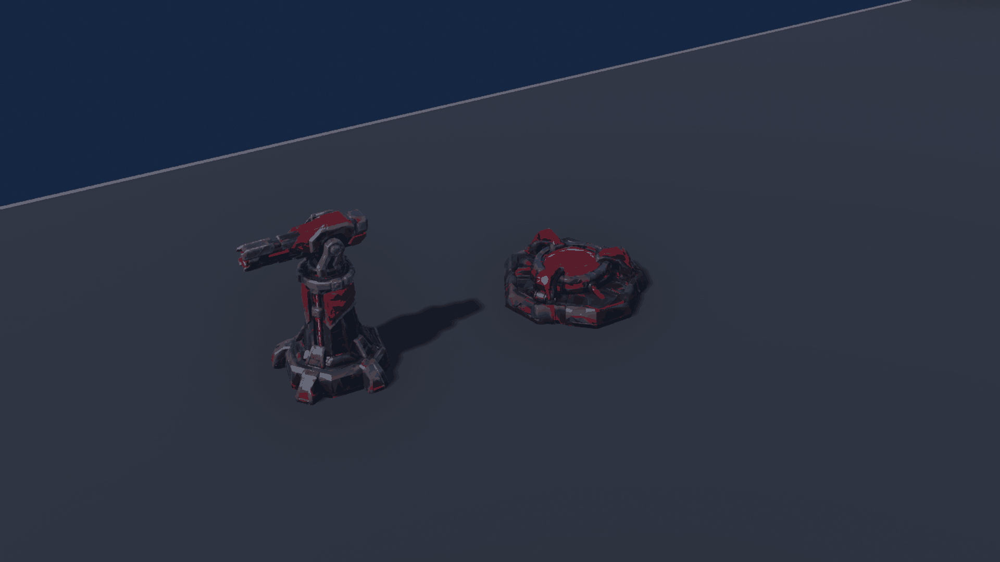
레드 탑 라인 · 억제기와 3차 포탑
레드 탑 라인의 기지 쪽 두 구조물을 옆에서 찍었습니다. 높은 3차 포탑과 낮은 억제기의 위치 관계를 보여주는 사진이며, 이 구간에는 아직 길과 벽이 없습니다.

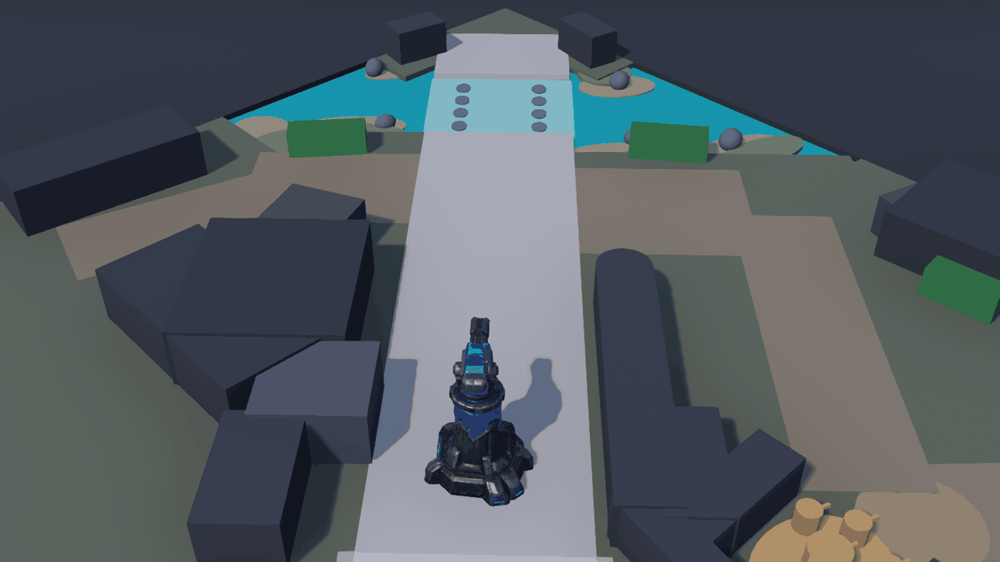
미드 1차 포탑에서 본 정글 입구와 여울
블루 1차 포탑 뒤에서 강가를 향해 찍었습니다. 팀 포탑은 실제 모델이고, 길·암벽·수풀·첫 캠프는 위치와 통로 폭을 확인하는 임시 형상입니다.

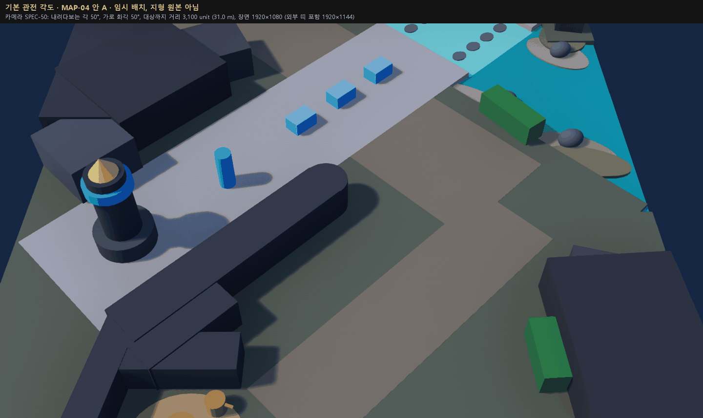
미드 길에서 강가까지 · 관전 시점
게임 엔진에서 미러시티의 미드 구간을 관전 카메라로 찍었습니다. 원기둥은 계약자, 상자는 드론의 자리를 나타냅니다. 완성 모델을 배치한 경기 장면은 아닙니다.

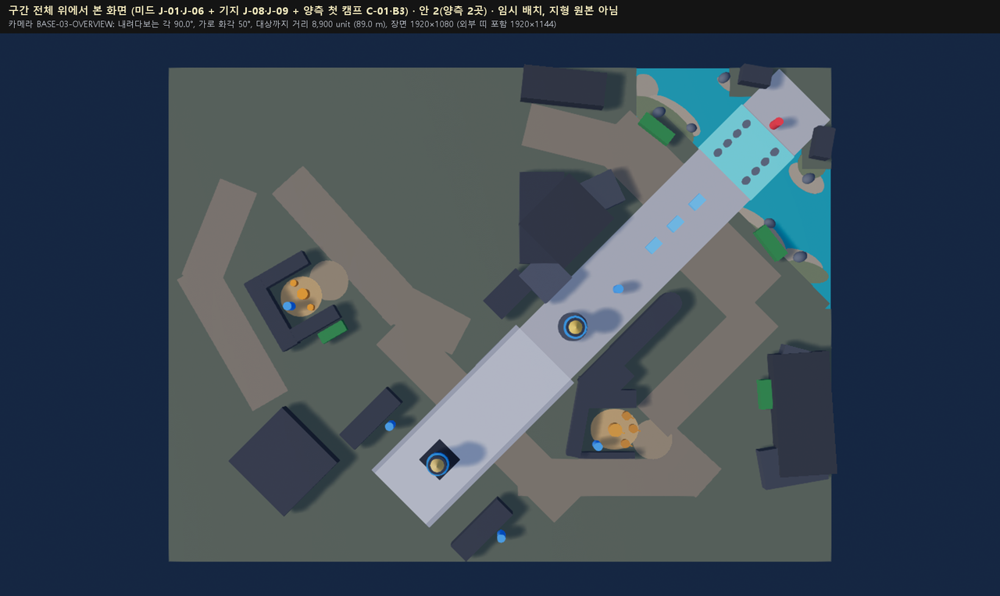
포탑 사이로 갈라지는 정글 입구 · 위에서 본 모습
기지 쪽 정글 입구를 추가한 11월 25일의 구간 촬영입니다. 당시 대리 포탑 둘 사이에서 길이 갈라져 첫 캠프와 여울로 이어지는 모습을 위에서 볼 수 있습니다.

남동 정글 입구에서 본 첫 캠프
미드 1차와 2차 포탑 사이에서 남동쪽을 바라본 장면입니다. 정글에 들어설 때 첫 캠프가 어디에 보이는지 확인하려고 찍었습니다. 주황색 표시는 드론 모델이 아닙니다.

강을 건너는 여울과 양쪽 강둑
미드 길에서 강을 건너는 자리를 관전 카메라로 찍었습니다. 두 줄의 돌판 사이가 여울이고, 강둑의 초록 상자는 수풀이 놓일 자리입니다.
경기 관전4장

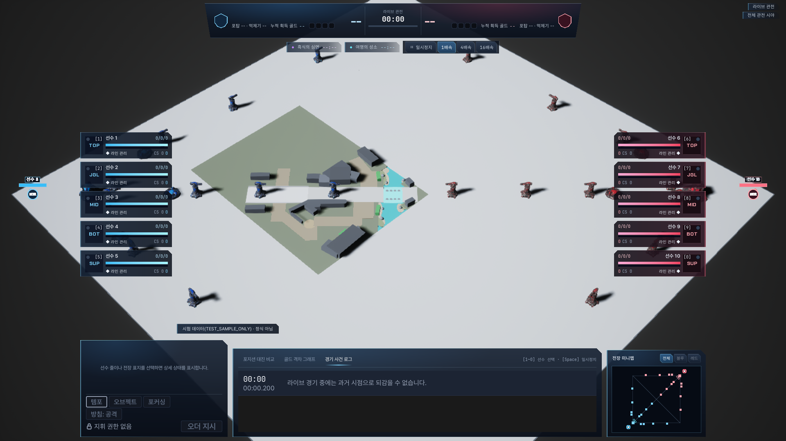
미러시티 시험 경기 · 중앙 라인 전경
전체 관전 시야의 시험 경기를 시작한 지 0.2초에 관전 카메라로 찍었습니다. 중앙 라인과 물길 주변에만 임시 지형을 배치했고, 바깥의 회색 평면은 구조물 위치를 확인하는 임시 바닥입니다.

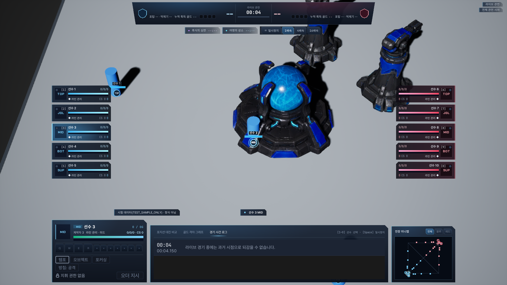
미러시티 시험 경기 · 블루 본진의 코어와 포탑
같은 경기의 4.15초에 블루 미드 선수를 따라간 장면입니다. 코어 앞의 원기둥은 임시 선수 모델입니다. 포탑 일부가 화면 밖이나 선수 카드 뒤에 있어 이 장면만으로는 두 포탑 사이의 간격을 볼 수 없습니다.

전장 전체 · 13:15, 처치 2 대 2
기본 공격만 쓰는 5대5 시험 경기를 관전 창에서 찍었습니다. 선수 이름은 표본이지만 위치와 체력, 부활 대기 시간은 경기에서 계산한 값입니다.

26:58 · 경기 종료
같은 경기의 마지막 장면입니다. 두 팀이 다섯 번씩 처치했고 레드가 이겼습니다. 이 시험에서는 3D 전장 대신 위치 표지를 썼습니다.
UI·HUD8장

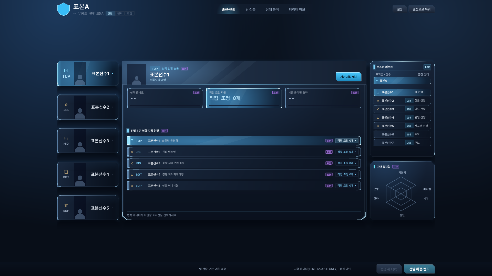
출전·전술 · 선발 다섯 자리
게임 창에서 개인 지침 창을 열지 않은 선발 단계의 시험 정지화면으로, 탑 선수를 선택한 모습입니다. 구단·선수 이름은 시험용이고 초상은 미반입 자리표시이며, 값이 없는 준비도·시즌 기록은 대시로, 기량 육각형은 빈 격자로 표시합니다. 실제 입력·저장 동작이나 최종 디자인 확정을 뜻하지 않습니다.

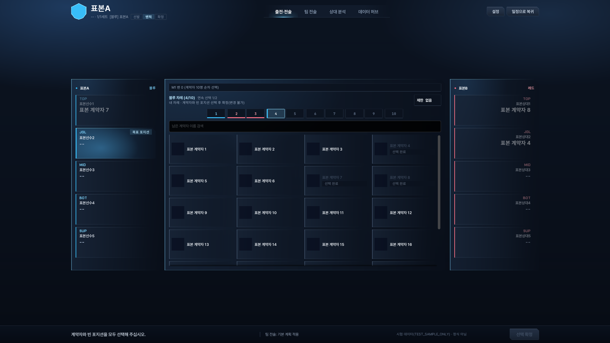
출전·전술 · 계약자 드래프트
출전 세 단계 중 두 번째인 드래프트입니다. 블루가 선택할 차례로, 양 팀에서 이미 고른 계약자와 아직 선택할 수 있는 후보를 함께 보여줍니다. 게임 창에서 촬영했으며 선수와 계약자는 표본입니다.

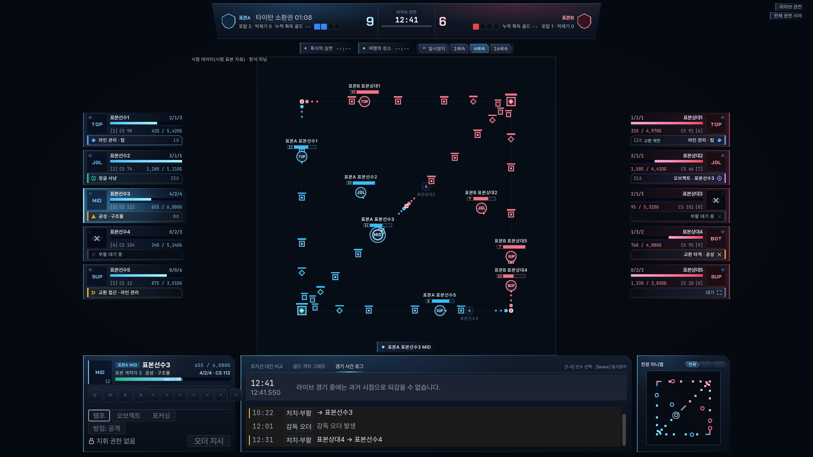
관전 HUD 중간본 · 전체 관전 시야
디자인 교정 전 촬영본입니다. 선수 카드의 처치·사망·도움, CS와 골드는 시험용이며 위 5대5 경기의 기록이 아닙니다. 교정한 화면에서는 1920×1080 기본 배율의 점수판·선수 카드·하단 패널 배치를 시안과 대조했습니다. 이 사진은 그 결과를 찍은 것이 아닙니다.

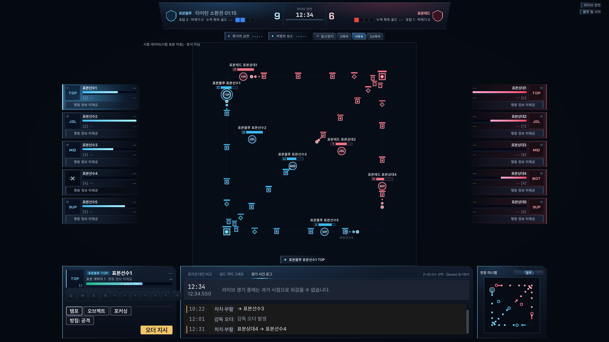
관전 HUD 중간본 · 블루 팀 시야
아직 최종 디자인이 아닌 블루 팀 시야의 시험 장면입니다. 선수 기록을 받지 않은 칸은 0으로 채우지 않습니다. 위치와 체력은 전장 자료에서 따로 받아 표시합니다.

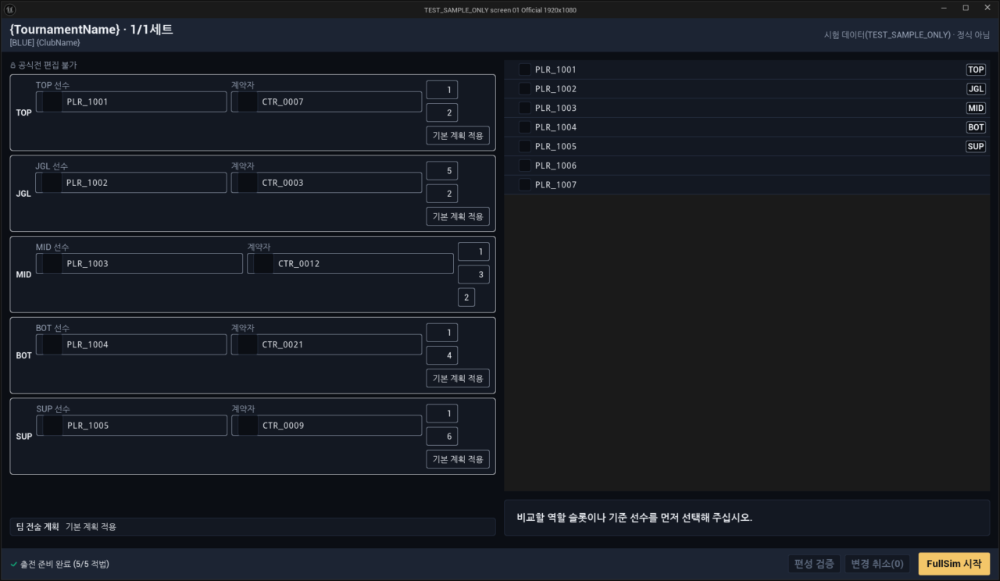
출전·전술 · 디자인 교정 전
11월 22일 게임 창에서 표본 선수로 연 편성 화면입니다. 이후 받은 디자인 시안을 적용하기 전 모습입니다. 현재 드래프트는 위의 11월 26일 사진에서 볼 수 있습니다.

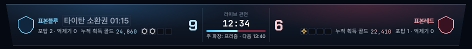
관전 점수판
1920×1080 관전 HUD에서 점수판만 잘라냈습니다. 소환권 표지가 처치 수와 시계를 가리지 않는지 살피는 시험 장면으로, 위 경기의 기록은 아닙니다.

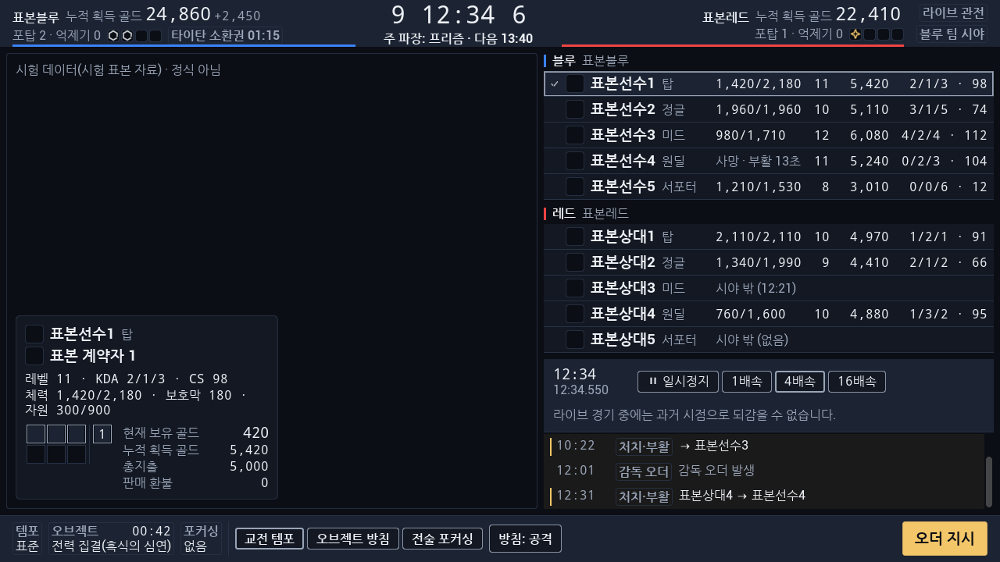
선수 카드 · 보유 골드와 지출
1280×720 관전 창에 표본 선수의 카드를 펼쳤습니다. 장비 칸과 골드 내역을 살피는 화면이라 전장은 비어 있습니다. 실제 경기의 구매 기록은 아닙니다.

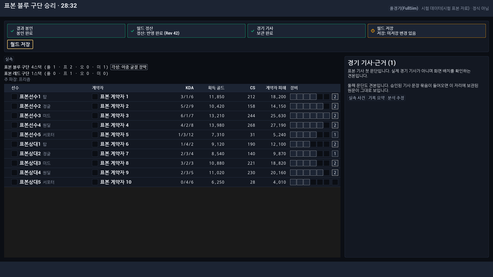
경기 결과 · 선수별 기록
1920×1080 결과 창에 시험용 기록과 견본 기사를 띄웠습니다. 상단에는 정산은 끝났지만 아직 저장하지 않았다고 표시됩니다. 앞선 5대5 경기의 결과표는 아닙니다.